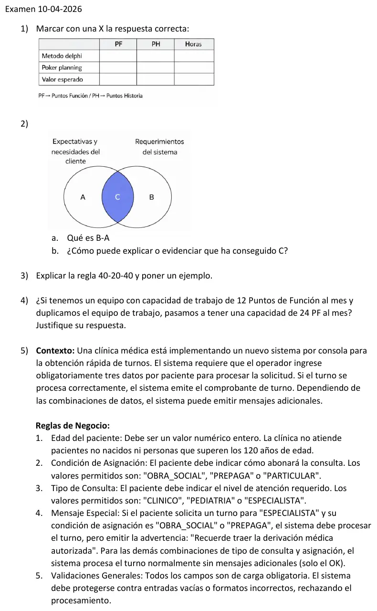
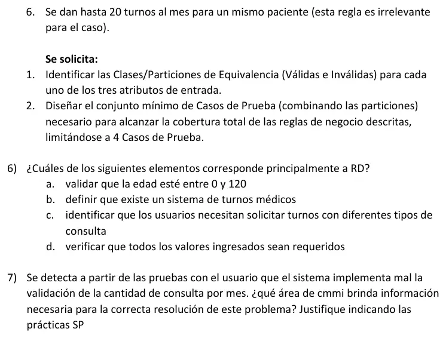

Final, 10/04/2026
Final, 10/04/2026
Enunciado




Propuesta de respuesta
Respuesta no verificada. La propuso Luta Studios con inteligencia artificial y ningún docente la revisó. Puede tener errores.
1. Técnica y unidad.
| PF | PH | Horas | |
|---|---|---|---|
| Método Delphi | X | ||
| Poker planning | X | ||
| Valor esperado | X |
Delphi es un consenso de expertos anónimo, con un facilitador y un cuestionario, que se usa para estimar el esfuerzo. Poker planning estima en puntos de historia. El valor esperado combina un valor optimista, uno más probable y uno pesimista de la duración o el esfuerzo, en horas, con . Los puntos de función no se estiman por opinión, se cuentan a partir de entradas, salidas, consultas, ficheros lógicos internos y ficheros de interfaz externos.
2. Expectativas y requerimientos.
a. B − A. Son los requerimientos del sistema que no responden a ninguna expectativa ni necesidad del cliente. Pueden ser de dos clases.
- Requerimientos de producto derivados, técnicos, que el cliente no expresa pero la solución necesita. Están bien si se pueden trazar a un requerimiento de cliente.
- Cosas que se especificaron sin que nadie las pidiera. Consumen esfuerzo y pueden pasar la verificación, porque cumplen lo especificado, pero no suman a la validación.
La trazabilidad bidireccional de REQM SP 1.4 los detecta, porque no tienen hacia atrás una necesidad de la que salgan. A − C es lo contrario, necesidades que no llegaron a ser requerimientos.
b. Cómo evidenciar C. C son los requerimientos que sí responden a lo que el cliente espera y necesita. Se evidencia así:
- Con RD SP 3.5, validando los requerimientos con el cliente mediante prototipos, simulaciones o demostraciones.
- Con REQM SP 1.4, mostrando en la matriz de trazabilidad que cada requerimiento sale de una necesidad y que cada necesidad tiene su requerimiento.
- Con REQM SP 1.2, con el compromiso del cliente sobre los requerimientos.
- Con VAL, demostrando con pruebas de aceptación o un piloto que el producto sirve para su uso previsto en su entorno previsto.
3. Regla 40-20-40. Reparte el esfuerzo de desarrollo en 40% para análisis y diseño, 20% para codificación y 40% para prueba.
Ejemplo. Si la codificación de un proyecto se estima en 200 horas y es el 20% del total, el total es horas. Análisis y diseño llevan horas y prueba otras 400. La práctica de la cátedra parte el 40% en análisis 10% y diseño 30%, que son 100 y 300 horas.
4. Duplicar el equipo. No necesariamente. Los puntos de función miden el tamaño, que se mantiene constante. Lo que cambia es el esfuerzo y, con los recursos, la duración. Que el equipo pase de 12 a 24 PF por mes supone que todo el trabajo se puede repartir, y eso no pasa.
- Hay tareas con predecesoras. Una tarea del camino crítico no avanza más rápido porque haya más gente esperando.
- Repartir una tarea baja la duración, pero coordinar, integrar y comunicar entre más personas suma esfuerzo.
- La gente nueva necesita formación y no rinde igual desde el primer día.
- La productividad de 12 PF por mes es un dato histórico de ese equipo. Un equipo distinto tiene otro ratio, que hay que medir.
5. Turnos de la clínica.
5.1 Particiones de equivalencia.
| Atributo | Válidas | Inválidas |
|---|---|---|
| Edad | V1, entero de 0 a 120 | I1, menor que 0. I2, mayor que 120. I3, no entero, como 30,5. I4, no numérico. I5, vacío |
| Condición de asignación | V2, OBRA_SOCIAL o PREPAGA. V3, PARTICULAR | I6, otro valor. I7, vacío |
| Tipo de consulta | V4, ESPECIALISTA. V5, CLINICO o PEDIATRIA | I8, otro valor. I9, vacío |
La edad es un rango, con una válida y dos inválidas, más las de tipo, formato y obligación. La condición y el tipo son conjuntos. OBRA_SOCIAL y PREPAGA se manejan igual, porque con ESPECIALISTA las dos dan la advertencia. PARTICULAR se maneja distinto. Lo mismo pasa con ESPECIALISTA frente a CLINICO y PEDIATRIA.
5.2 Conjunto mínimo de casos, con 4.
| Caso | Edad | Condición | Tipo | Resultado esperado | Cubre |
|---|---|---|---|---|---|
| CP1 | 35 | OBRA_SOCIAL | ESPECIALISTA | Comprobante y «Recuerde traer la derivación médica autorizada» | V1, V2, V4, regla 4 |
| CP2 | 0 | PARTICULAR | PEDIATRIA | Comprobante, sin mensajes | V1 en su borde, V3, V5 |
| CP3 | 121 | PREPAGA | CLINICO | Rechazo | I2, regla 1 |
| CP4 | 40 | vacío | ESPECIALISTA | Rechazo | I7, regla 5 |
Los dos primeros cubren todas las particiones válidas y las dos salidas de la regla 4. Cada caso inválido lleva un solo valor inválido, para saber qué provocó el rechazo. Con el límite de 4 casos quedan sin probar I1, I3, I4, I5, I6, I8 e I9, que necesitarían un caso cada una.
6. Qué corresponde principalmente a RD. c, identificar que los usuarios necesitan solicitar turnos con diferentes tipos de consulta. Es RD SP 1.1, obtener las necesidades de las partes interesadas. Validar la edad y verificar que los valores sean requeridos son controles sobre lo construido, de VER o de prueba. Que exista un sistema de turnos es el punto de partida del proyecto, no un requerimiento que haya que obtener.
7. La validación de turnos por mes está mal implementada. REQM. El error lo encontró la validación con el usuario, y para resolverlo hace falta saber qué decía el requerimiento y qué tocó.
- SP 1.1, obtener una comprensión. Se aclara con quien pidió la regla qué significa «hasta 20 turnos al mes», por ejemplo si es por mes calendario.
- SP 1.4, trazabilidad bidireccional. Desde la regla de negocio se llega al diseño, al código y a los casos de prueba que la implementan.
- SP 1.5, identificar inconsistencias. Se registra la diferencia entre lo construido y el requerimiento y se toman acciones correctivas.
- SP 1.3, gestionar los cambios. Si la regla cambia, se documenta el cambio con su razón y se evalúa su impacto.
Respuesta no verificada. Puede tener errores.
Se armó con la página Final, secciones Técnicas, Puntos de función y La regla 40-20-40, y Particiones de equivalencia de Regularización y Requerimientos RD y REQM de Aprobación directa.
Quedó en duda: Las unidades de Delphi, Poker y valor esperado salen del apunte de alumnos, y Poker planning es una duda abierta de la materia. El reparto 40-20-40 también está en duda. En la 6 va solo la c, y la b es discutible. En la 7 va REQM, aunque el resumen sugiere MA para la pregunta de qué área mide las consultas. Las particiones agrupan obra social y prepaga, y el mínimo de 4 casos depende de la regla del mínimo de casos.
¿Cómo te fue?
Marcá cada tema del examen.
- EstimaciónEstimación, en Final
- RDRequerimientos RD y REQM, en Aprobación directa
- ParticionesParticiones de equivalencia, en Regularización